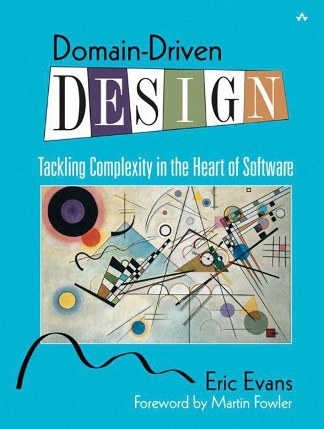
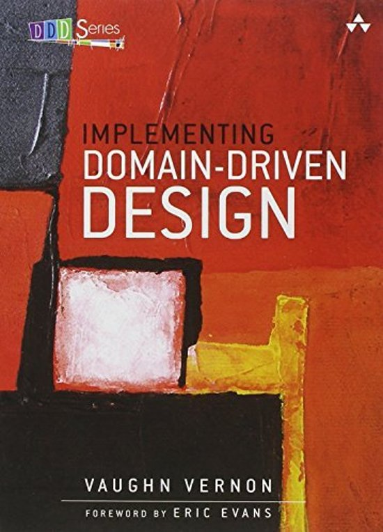
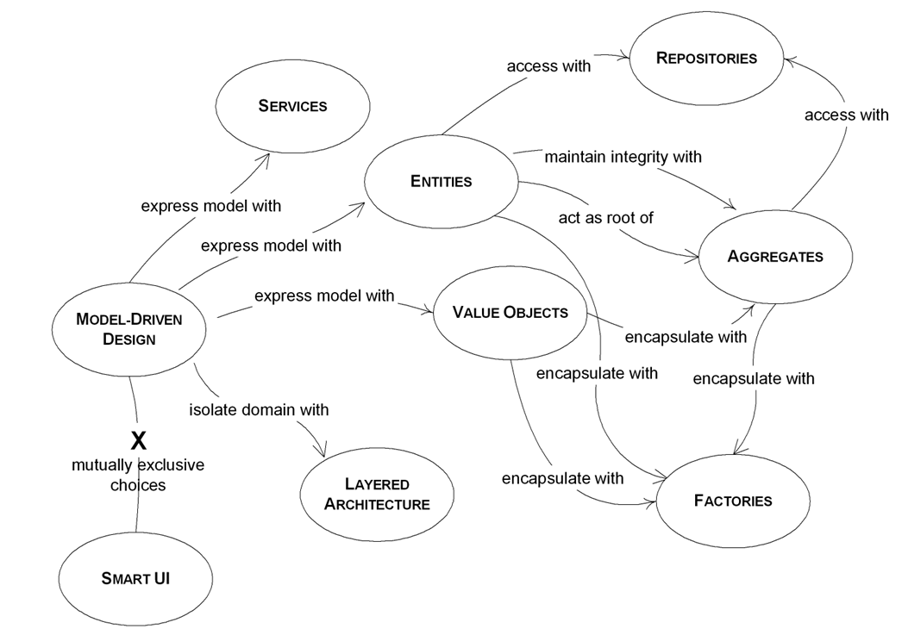
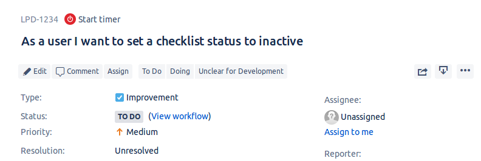
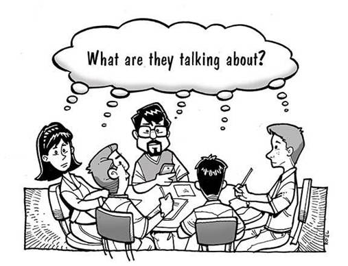
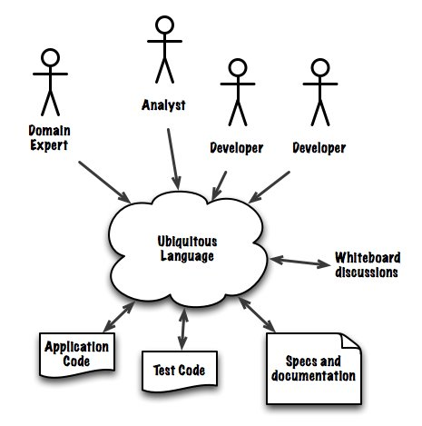
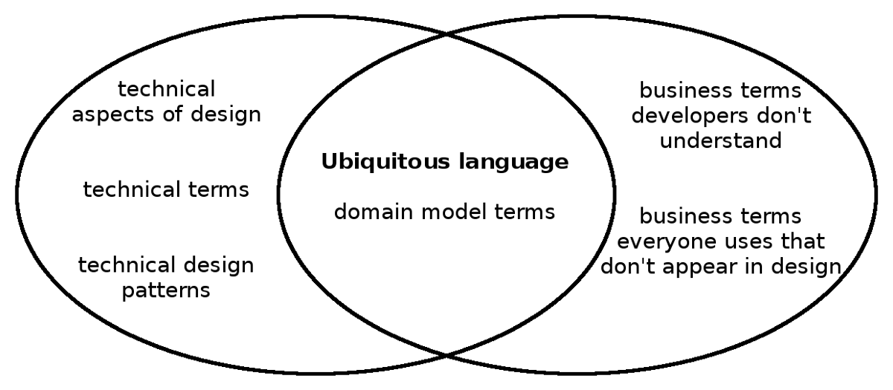
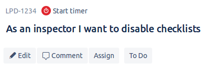

Introduction to domain-driven design
Nic Wortel
Overheard
Source: Implementing Domain-Driven Design
The code breaks a lot when I try to change it. Does anyone actually understand what it's supposed to do?
When I try to change something in this part of the system, I have to be careful not to break completely unrelated functionalities somewhere else.
I wish the developers understood better what we do here.
The developers always have some strange way of talking about what our software does. If we talk about A, they say it's really called B. It's like we have to have some sort of dictionary and road map on hand every time we try to communicate what we need.
We are shipping software. It's not always with the greatest result, and changes seem to take longer than they should.
Recognizable?
Domain-driven design can help you.
Goals of this presentation
After this presentation, you will...
- Know what DDD is
- Know the difference between strategic and tactical DDD
- Know what a ubiquitous language is
Use / importance
Knowing about domain-driven design will help you to:
- Improve your collaboration with team members (developers and domain experts)
- Understand where the heart of the software is and which parts deserve the most attention
- Design software that is future-proof and can keep up with changing requirements
Future presentations
- Strategic DDD
- Ubiquitous language
- Domain, subdomains, bounded contexts
- Tactical DDD
- Entities, value objects, services
- Aggregates
- Domain events
- Repositories
Structure
What is domain-driven design?
DDD is a set of tools that assist in designing and implementing software that delivers high value, both strategically and tactically.
Traditional software issues
- Developers and domain experts talk in different languages, making it difficult for them to understand each other and collaborate
- Developers misunderstand how the business operates, resulting in software that misses the point
- Technical details leak into the software model
- Changes to the software take a lot of time to implement, and code breaks easily when changes are made
How DDD helps
- Creates a common, shared language between the domain experts, the software developers, and the software, without requiring translation in between
- Facilitates a creative collaboration between domain experts and technical experts (developers), in order to produce software with high value for the business
- Results in software that is built for change
Domain-Driven Design
Tackling Complexity in the Heart of Software
Eric Evans, 2003
Implementing Domain-Driven Design
Vaughn Vernon, 2013
Strategic vs Tactical design
Strategy without tactics is the slowest route to victory. Tactics without strategy is the noise before defeat.
Tactics are the use of armed forces in a particular battle, while strategy is the doctrine of the use of individual battles for the purpose of war.
- strategic design
- Modeling and design decisions that apply to large parts of the system.
- tactical design
- Modeling and design decisions that apply to the implementation of a smaller part of the system.
Strategic design
Splitting up a large domain model and focusing development effort on what is strategically important for the business (the core domain).
Tactical design
Building a rich domain model that reflects our mental model and the ubiquitous language.
Strategic DDD patterns

Tactical DDD patterns

The ubiquitous language
Inspector:
I want to disable checklists

class ChecklistDefinitionStatusService
{
public function setVisible($checklistDefinitionId, $visible)
{
$this->visible = $visible;
}
}
$checklistDefinitionStatusService->setVisible(false);

Why is this a problem?
- constant need to translate from the problem (domain) language to the technical language
- people use the same term differently without realizing
- information is lost in translation, misaligned concepts are used
- developed software misses the point
- users will have to compensate
- u·biq·ui·tous
- Adjective: present, appearing, or found everywhere.
- Synonyms: omnipresent
- ubiquitous language
- A shared language developed by the team - a team composed of both domain experts and software developers.
Characteristics
- used everywhere:
- in user stories
- during discussions and meetings
- in BDD features and scenarios
- in documentation
- in test and source code
- used by everyone on the team: developers and domain experts
- evolves over time as new concepts are discovered


How to develop a ubiquitous language?
- discuss and agree on terminology as a team
- create a glossary
- use one word for a specific concept, and only one concept per word
- point out imprecision and contradictions
- update the code as the language evolves
- avoid the use of acronyms and abbreviations

class Checklist
{
public function disable()
{
$this->enabled = false;
}
}
$checklist->disable();
Summary
- Strategic design helps splitting up a large domain model and focusing on the most important part
- Tactical design helps creating a rich domain model that captures business logic
- The ubiquitous language is used by all team members to prevent having to translate between different technical and domain terminology